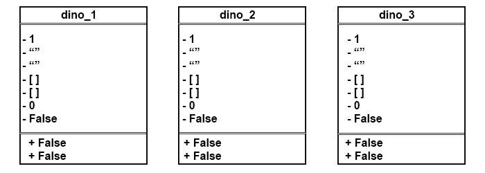
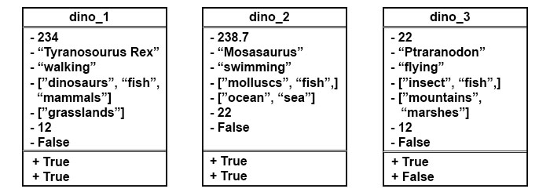
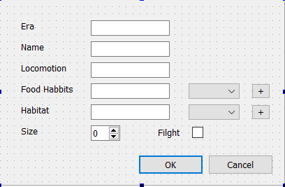
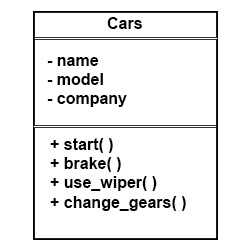
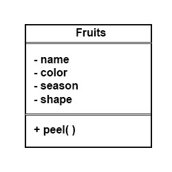
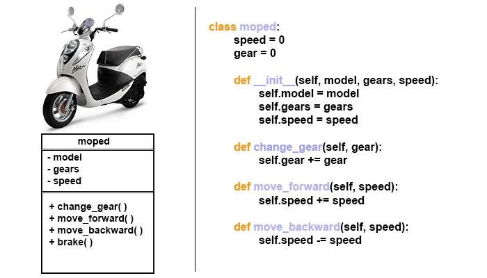

Classes in Python
Table of Contents
1 Classes
One of the important reason why we are using Python today is because it is an Object Oriented Programming Language. And you might hear from time to time that everything in Python is an object. Lets see how i can make this mumbo jumbo a little bit more clear.
There is a transperant plastic object with a cap and a refil inside it is on my desk at the moment. Yes please note that I have mentioned an onject here. Most probably the object is identified by a name and in english we call it a pen. Our world is scatterd with objects around if we are to feed data about objects to our computers and make them do repetative tasks, complex calculations, life saving decisions we need the computers to understand the kind of object they are dealing with by providing them a basic definition. Simply put it like if you built a robot to chop wood, how would the robot ubnderstand what is wood further robot might not know what size to cut different types of wood. The example being really stupid.
We all heard about dinosaurs. According to wikipedia Dinosaurs are a diverse group of reptiles of the clade Dinosauria. They first appeared during the Triassic period, between 243 and 233.23 million years ago, although the exact origin and timing of the evolution of dinosaurs is the subject of active research. They became the dominant terrestrial vertebrates after the Triassic–Jurassic extinction event 201.3 million years ago; their dominance continued through the Jurassic and Cretaceous periods… Basicall they are scary big lizards, lived millions of years ago that are, thank God dead now because of a big meteor. For referen please see Ice age movie series. All of these dinosaurs have a name, some legs, eating habbits, living haitats, physical size, fight capablity or incapablity. I want to make a database of dinosaurs that are common in my area. So when I find a raptor go and tell computer here is a picture of a dinosaur please put it in your database. Well we all might know although it not impossible this is not exactly how our computers take instructions unless we programatically tell them to do so.
To do that, lets define the term Dinosaur to the computer. A dinosaur should have these properties
- Some animal lived long ago
- Has a name(type or species)
- Bi-pedal, fins, wings, multi-pedal
- Food habbits
- Habitat
- Size
- Flight Capablity or incapablity
And the dinosaur definition should do these tasks.
- Identity and return information about a Dinosaur
- Check if the animal can be categorized as a Dinosaur in the first place.
A basic representation of dinosaur could be,
| Dinosaur |
|
-era(year) - Float -name - String -locomotion - String -food_habbits - List -habitat - List -size - Integer -flight-Boolean |
|
+identifyDinosaur +checkIfDinosaur |
In Python this representation can be written as,
class Dinosaurs: ''' The dinosaur is a pre historic animal ''' era = 1 # Default value 1 name = "" # Empty String locomotion = "" # Empty String food_habbits = [] # Empty List habitat = [] # Empty List size = 0 # Default Value 0 flight = False # Default False def identifyDinosaur(self, dino_name): return dino_name in self.name def checkIfDinosaur(self): if self.era<243 and self.era>233.23: return True
This is actually how a Class in python is defined. But wait lets use it.
dino_1 = Dinosaurs()
Or
dino_2 = Dinosaurs()
So whats this business with "self". Well to understand self we need to look into the statement dino3 = Dinosaurs() This is a way of utilising the class Dinosaurs to define dino3 as a dinosaur to the computer. So if we type,
print(dino_1.name) #Result: "" print(dino_1.era) #Result: 1 print(dino_2.food_habbits) #Result: [] print(dino_3.locomotion) #Result: "" # We can even use methods print(dino_1.identifyDinosaur("Tyranosorus Rex")) #Result: False print(dino_2.checkIfDinosaur()) #Result: False
dino1, dino2 and dino3 are instances of the class Dinosaurs(). so dino1 will have its own/unique set of era, name, locomotion, food habbits, etc. So will dino2. And so will dino3. If we had dino4, dino5 or harrypotter or deshbhaktaviik these would all have the unique attribute values of era, name, locomotion, etc. "Self" parameter here represents the instance itself. The naming convention suggests that we call the instance self rather than tom, harry, or someinstance although that can be done. Some more naming conventions. Class names should start with a capital letter or Camel cased. Avoid underscores for class names. Generally class names are plurals. Good class names are Students(), ObsoleteAccounts(), ProgramErrors(). Variables inside classes are called attributes and functions are called methods. So now these instances of Dinosaurs() can be represented as,

Now look those values that has replaced the tributes. Looks like a big mess. So much so for Object Oriented Programming. This looks like a mockery and a waste of precious time. But its not what it looks like here the attribute values can be over-written for each individual instances.
dino_1.era = 234 dino_1.name = "Tyranosorus rex" dino_1.locomotion = "walking" dino_1.food_habbits = ["dinosaurs", "insects", "fishes"] dino_1.habitat = ["grasslands"] dino_1.size = 12 dino_1.flight = False # We can even use methods print(dino_1.identifyDinosaur("Tyranosorus rex")) #Result: True print(dino_1.checkIfDinosaur()) #Result: True
Similiarly we can do the same treatment to the instances dino2 and dino3.
dino_2.era = 238.7 dino_2.name = "Mosasaurus" dino_2.locomotion = "swimming" dino_2.food_habbits = ["molluscs", "fishes"] dino_2.habitat = ["seas", "oceans"] dino_2.size = 17 dino_2.flight = False dino_3.era = 22 dino_3.name = "Pteranodon" dino_3.locomotion = "flying" dino_3.food_habbits = ["insects", "fishes"] dino_3.habitat = ["mountains", "marshes"] dino_3.size = 9 dino_3.flight = True # We can even use methods print(dino_2.identifyDinosaur("Mosasaurus")) #Result: True print(dino_2.checkIfDinosaur()) #Result: True print(dino_3.identifyDinosaur("Pteranodon")) #Result: True print(dino_3.checkIfDinosaur()) #Result: False
Hence the representation of these tables have changed,
 The whole process may be given a GUI.

Figure 2: This is a gui to insert dinosaur information to the computer.
Well while creating an instance what if we could place the values of era, name, locomotion, habitat, foodhabbits,size and flight as a parameter it would spare us the extra time in gathering information one by one. One way of doing that is by initializing the instance as,
dino_1 = Dinosaurs(234, "Tyranosorus rex", "walking", ["dinosaurs", "insects", "fishes"], ["grasslands"], 12, False)
This way whenever we press ok in the GUI shown in figure1 we end up creating an instace with the initiated values. Constructors are special class members which are called by the Python interpreter every time an object of that class is instantiated. A constructor of a class is actually a member function of the class its declared as:
class Cowboys: def __init__(): ''' This is the constructor ''' pass
Some more examples are:  
Similiarly like a constructor there is a destrutor. Its use unlike the constructor is to destroy/delete an instance of the class. Its declared as:
class Cowboys: def __init__(self): # Used to construct the instance pass def __del__(self): # Used to destroy an instance pass
These double underscore also known as dunder methods are also called magic methods. Lets recreate Dinosaurs class using the constructor method.
class Dinosaurs(): def __init__(self, era, name, locomotion, habitat, food_habbits, size, flight): ''' This is the constructor ''' self.era = era self.name = name self.locomotion = locomotion self.habitat = habitat self.food_habbits = food_habbits self.size = size self.flight = flight def __del__(self): return f'Instance Destroyed with name {self.name}'
So now,
dino_1 = Dinosaurs(234, "Tyranosorus rex", "walking", ["dinosaurs", "insects", "fishes"], ["grasslands"], 12, False) dino_2 = Dinosaurs(238.7, "Mosasasaurus", "swimming", ["molluscs", "fish"], ["ocean", "sea"], 22, False) dino_3 = Dinosaurs(234, "Ptarandon", "flying", ["insect", "fish"], ["mountains", "marshes"], 9, True) del dino_2 # Deletes/destroys dino_2 instance
Some examples
